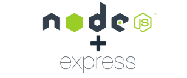
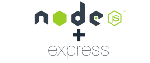

Making it easy to learn
Not only are we re-imagining how students grade each others assignments, but we are also creating opportunities for CS students to hone their craft in a real project setting.
Design Concept
Approaching peer-grading with an understanding of human-centered design allows us to get creative with how we imagine the peer-grading experience.
Development experience
Students get to take ownership of the project and work on the features that are most interesting to them. Learn by doing, and watch your work be used in real classrooms.
Agile Methodologies
Some might call it a buzz word, we call it our development cycle! Work iteratively, craft user stories, assign story points, and develop efficiently with our Agile workflows.
 
